O site conta “da tela ao roteador”: um pacote que atravessa camadas. A marca usa a mesma gramática. A linha vertical é o barramento, o ponto verde é o pacote, e cada forma é desenhada com o mesmo traço, a mesma grade e as mesmas pontas redondas.
As iniciais de Castro Jorge da Costa. O j é o barramento do diagrama do site, e o pingo dele vira o pacote em verde de “link up”. As duas letras c abrem para o centro e enquadram o fluxo.
Haste vertical única, a mesma linha que liga as camadas no hero do site.
O único elemento em cor. O diâmetro é maior que o traço, como o pacote é maior que a linha por onde passa.
As letras c abrem 84°, voltadas para o barramento: entrada e saída.
traço 7.5u · raio do c 18.5u · grade 4u · pontas redondas
Linha de x-height, eixo do barramento e respiro mínimo. O respiro em volta do símbolo é igual ao diâmetro do pacote.
Para quando o espaço pede uma letra só: avatar, favicon, ícone de app. A haste do D é o barramento, interrompida pelo nó verde: o pacote no meio do caminho. O bojo é a rota de ida e volta (requisição → resposta).
A assinatura usa Archivo SemiBold, convertida em contorno (não depende de fonte instalada). No wordmark davicjc, o pingo do j também é o pacote, ligando o nome ao símbolo.
Teste de leitura de 16px a 96px. No favicon o traço engrossa para continuar nítido em 16px.
As mesmas do site. Só o pacote tem cor; o resto é tinta e papel.
tinta · #0a0d12
papel · #e8edf3 / claro #f4f6f8
sinal · #4ade80 / no claro #16a34a